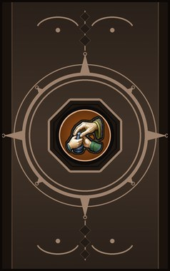
Technique trees › Crafting arts
Artisan arts
14 techniques in the Ninjutsu tab.
Open to every ninja. How high a ninja can go depends on their ninja build.
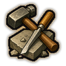
Craftsman DCB
Passive. D/C/B-rank passive. Faster at crafting, smithing and tailoring: +10% / +20% / +30%.
Craftsman DCB
Passive. D/C/B-rank passive. Faster at crafting, smithing and tailoring: +10% / +20% / +30%.
D/C/B-rank passive. Faster at crafting, smithing and tailoring: +10% / +20% / +30%.
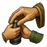
Apprenticeship D
Passive. D-rank passive. Learned at a master's side: +10% global learning.
Apprenticeship D
Passive. D-rank passive. Learned at a master's side: +10% global learning.
D-rank passive. Learned at a master's side: +10% global learning.
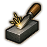
Tune Tools D
Passive. D-rank passive. Keeps every tool sharp and true: +8% construction success.
Tune Tools D
Passive. D-rank passive. Keeps every tool sharp and true: +8% construction success.
D-rank passive. Keeps every tool sharp and true: +8% construction success.
Cutting Corners, Not Quality C
Passive. C-rank passive. 15% chance that a crafted or built item comes out one quality level better.
Cutting Corners, Not Quality C
Passive. C-rank passive. 15% chance that a crafted or built item comes out one quality level better.
C-rank passive. 15% chance that a crafted or built item comes out one quality level better.
Bargain-Hunter C
Passive. C-rank passive. Knows the real price of ore and cloth: +8% trade prices.
Bargain-Hunter C
Passive. C-rank passive. Knows the real price of ore and cloth: +8% trade prices.
C-rank passive. Knows the real price of ore and cloth: +8% trade prices.
Figure of Speech C
Passive. C-rank passive. Talks like a guild master: +15% negotiation.
Figure of Speech C
Passive. C-rank passive. Talks like a guild master: +15% negotiation.
C-rank passive. Talks like a guild master: +15% negotiation.
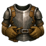
Armour Training C
Passive. C-rank passive. Knows how armour should sit: +8% sharp and blunt armour.
Armour Training C
Passive. C-rank passive. Knows how armour should sit: +8% sharp and blunt armour.
C-rank passive. Knows how armour should sit: +8% sharp and blunt armour.
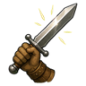
Weapon User C
Passive. C-rank passive. Knows the weapons they make: +8% melee damage.
Weapon User C
Passive. C-rank passive. Knows the weapons they make: +8% melee damage.
C-rank passive. Knows the weapons they make: +8% melee damage.
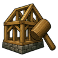
Master Builder B
Passive. B-rank passive. +20% construction speed and +10% construction success.
Master Builder B
Passive. B-rank passive. +20% construction speed and +10% construction success.
B-rank passive. +20% construction speed and +10% construction success.
Mind Gear B
Passive. B-rank passive. A craftsman's calm: lower mental break threshold and psychic sensitivity.
Mind Gear B
Passive. B-rank passive. A craftsman's calm: lower mental break threshold and psychic sensitivity.
B-rank passive. A craftsman's calm: lower mental break threshold and psychic sensitivity.
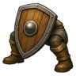
Defensive Stance B
Passive. B-rank passive. Always braced: takes 8% less damage.
Defensive Stance B
Passive. B-rank passive. Always braced: takes 8% less damage.
B-rank passive. Always braced: takes 8% less damage.
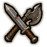
Weapon Veteran A
Passive. A-rank passive. +15% melee damage and aims 10% faster.
Weapon Veteran A
Passive. A-rank passive. +15% melee damage and aims 10% faster.
A-rank passive. +15% melee damage and aims 10% faster.
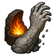
Stone-like A
Passive. A-rank passive. Skin hardened by the forge: +15% heat armour and 5% less damage.
Stone-like A
Passive. A-rank passive. Skin hardened by the forge: +15% heat armour and 5% less damage.
A-rank passive. Skin hardened by the forge: +15% heat armour and 5% less damage.
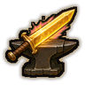
Mastercraft S
Passive. S-rank passive. S-rank. 30% chance that a crafted or built item comes out one quality level better (replaces Cutting Corners).
Mastercraft S
Passive. S-rank passive. S-rank. 30% chance that a crafted or built item comes out one quality level better (replaces Cutting Corners).
S-rank passive. S-rank. 30% chance that a crafted or built item comes out one quality level better (replaces Cutting Corners).
Chakra is the technique's base cost, the number in its def. In play it is multiplied by the pawn's chakra energy usage multiplier, which traits (chakra artificer 90%, volatile conduit 110%), World of Naruto genes and jutsu enhancements change, so the technique window can show a slightly different number for each ninja. Cooldowns are in-game time, as the technique window shows them, and the pawn's cooldown stat shortens or lengthens them. World of Naruto gives every ninja a base of 100 maximum chakra; genes and traits change it.